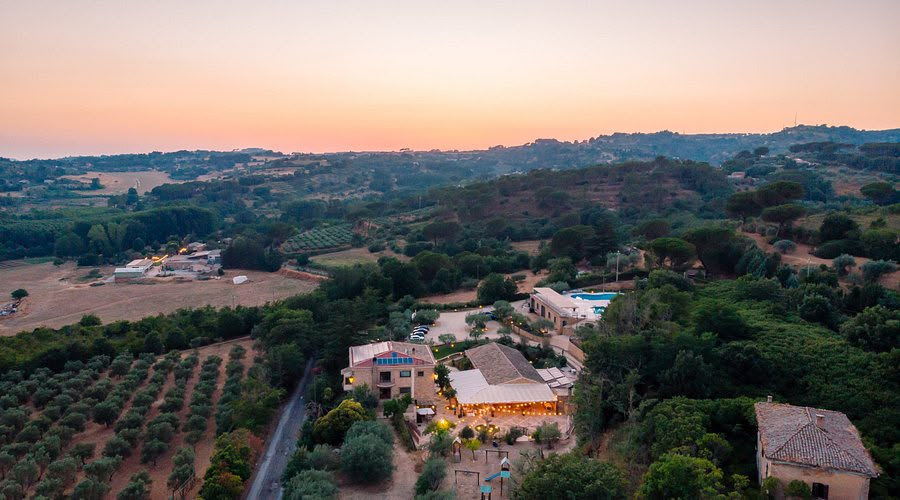

The Day Before
Friday 10 September 2027
Arrive during the afternoon, settle in, and join us for an informal pizza party.
18:00
Agriresort Leano
Above the pool
10 — 12 September 2027
Agriresort Leano, Sicily

We would love for you to join us at our wedding on Sicily. The wedding will take place among olive trees, donkeys, cats, friends and family.
We hope with this weekend to make plenty of time for each other in a timeless scenery, and for our guests to have time to meet and greet eachother.

Arrive during the afternoon, settle in, and join us for an informal pizza party.
18:00
Agriresort Leano
Above the pool
You are free to explore before we kick off with a ceremony in the afternoon, followed by reception, dinner and a party.
15:30 · Ceremony
Hilltop garden
16:30 · Reception
By the pool
19:30 · Dinner
In the courtyard
22:30 · Party
By the pool
Sleep in. Then sunglasses out and swimsuits on for a fun and relaxing afternoon at the pool.
From 12:00
On the pool deck.
Departure when you have to.
Pool · food · music
Closest Airport: Catania.
Drive 1,5 hours inlands.
Alternative Airports: Palermo (2,5 hours) and Comiso (1,5 hours, very small).
Let us know in the RSVP, if you are interested in shared transport, and when.
The entire programme will take place on the same property.
There is accommodation reserved for a majority of guests at the venue, for two nights. The venue furthermore connects you with AirBnBs and accomodations exclusively reserved for our guests, a short drive into town.
Let the venue know if you would like a room for two, three, four or five guests, if you plan to share a room with friends.
Rooms for two people cost 120€ per night, rooms for three cost 180€ per night, and rooms for four or more cost 240 € per night. Sharing with friends gets you the best price!
Book accommodation through the venue, mentioning our name and wedding date for reference: resortleano@gmail.com, www.tenuteleano.com, Link to Google Maps
Check-in from 2:00 pm and check-out by 11:00 am.
Tenuta Savoca is a recommended, high-end accommodation a short walk from the wedding venue.
Our venue (Leano) can help with further options.
If you're turning the wedding into a holiday, here are a few places we can recommend to you.
For Friday and Sunday feel free to wear what makes you comfortable. For the wedding day on Saturday we like to see you festive and in any colour but white. The location is on a hill and we will be going up and down, on gras, gravel and staircases - keep this in mind when deciding what shoes to wear.
Yes! Your children are welcome and we would love to see them. Let us and the hotel know and, who knows, if there are other children we may be able to arrange shared childcare. If your children stay home, we are just as happy to celebrate with you.
No worries. Through the RSVP where you let us know that you attend, you can let us know about allergies or food preferences. If you are staying at the hotel, also let the hotel know so this is also taken into account for breakfast.
Most likely yes. The hotel is a 1 hour and 30 minutes drive away from Catania airport, and public transport is limited. Please let us know your flight itinerary and if you are interested in shared transport. If the timing fits with other guests, we will try to arrange group transport and let you know latest three months ahead.
Not a problem. We'll cherish the time we can have together, also if it is not for all three days. Just let us know in the RSVP.
Yes, we welcome contributions to the programme that signify your relationship to us. Depending on what kind of contribution you are thinking of, it is possible to get involved with the programme on all three days. Please coordinate this with our toastmasters Linus (+1234) and Mathias (+1234).
English, Dutch, Danish and German - most likely. We expect a true reflection of the languagues in our lives, and we encourage you to speak the languague that comes natural to you.
For the big questions, please reach out to us. For questions about the venue and hotel, you can contact (Hotel mail). For contributions to the programme, contact our toastmasters Linus (+1234) and Mathias (+1234).
Swimwear, sun protection, appetite, and some comfy shoes for dancing.
Your presence is your present. Seriously. No gifts.